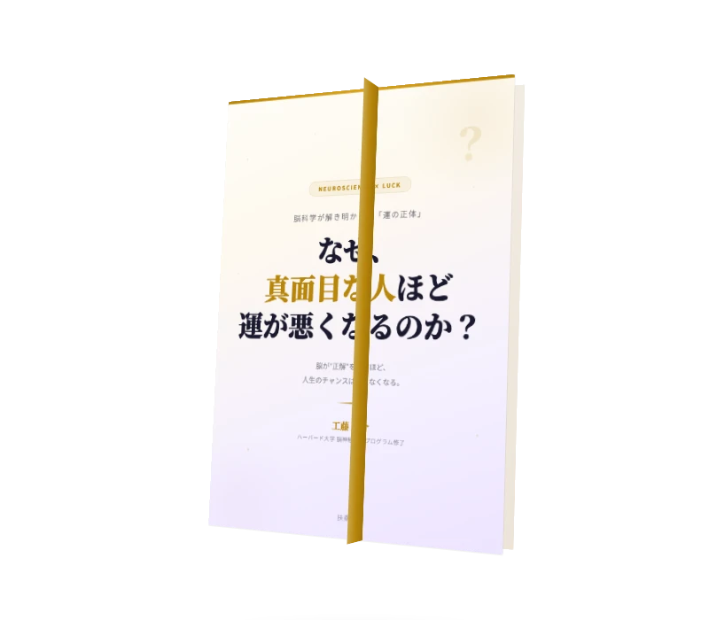

NEUROSCIENCE × LUCK ENGINEERING
真面目な人が
運を上げるための技術
運は才能じゃない。技術だ。
AI時代、実力では差がつかなくなった。
成果を分けるのは「運」。
そして運は、脳の使い方で変えられる。
※メールアドレスのみで登録できます

工藤圭介
ハーバード大学 脳神経科学プログラム修了
2026年6月 扶桑社より商業出版予定
NEUROSCIENCE × LUCK ENGINEERING
運は才能じゃない。技術だ。
AI時代、実力では差がつかなくなった。
成果を分けるのは「運」。
そして運は、脳の使い方で変えられる。
※メールアドレスのみで登録できます
工藤圭介
ハーバード大学 脳神経科学プログラム修了
2026年6月 扶桑社より商業出版予定
知識はAIが持っている。スキルもAIが代替する。
真面目に正解を積み上げる戦略は、もう通用しない。
では、何が成果を分けるのか？
それは「チャンスに気づく力」。つまり、運。
87%
のビジネスパーソンが
「運も実力のうち」と回答
3x
「運がいい人」は
チャンス認知率が3倍
28日
脳の注意回路は
28日で書き換わる
脳が「正解」を探しているとき、注意フィルターが極端に狭くなる。まずこの無意識の回路を自覚し、解除する技術を身につける。
運が良い人は「偶然」を「兆候」として読む。日常の違和感を未来への伏線として捉える力。これは後天的に鍛えられる脳の技術。
自分だけのストーリーラインを持つと、関連する兆候が自動的に見えるようになる（RAS・潜在意識）。運は「線」として展開する。
INSTRUCTOR
合同会社スループットワールド代表
高卒からハーバードへ。正解のレールに乗れなかった異色の経歴。
8年間「運」を研究し、500名のコミュニティを運営。2026年6月に扶桑社より商業出版予定。
「正解を持てなかったから、運が味方した」。この体験を脳科学で解剖し、誰でも再現できる「技術」として体系化した。
扶桑社より全国書店にて発売予定

NEW BOOK
脳科学が解き明かした「運の正体」。
正解を探すほどチャンスが見えなくなる仕組みと、
運を味方にする脳の使い方を体系化した一冊。

前著「変わらない勇気」
変わることよりも強みが活かされる働き方を
してみませんか？
※本LPの内容は書籍の一部を先行公開したものです
「真面目な人が運を上げるための3つの技術」を
無料の特別コンテンツとしてお届けします。
※いつでも解除できます